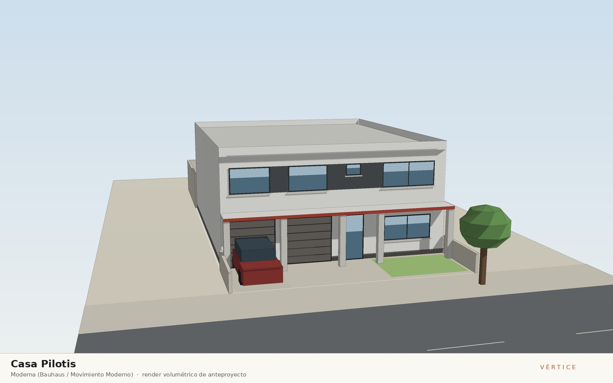
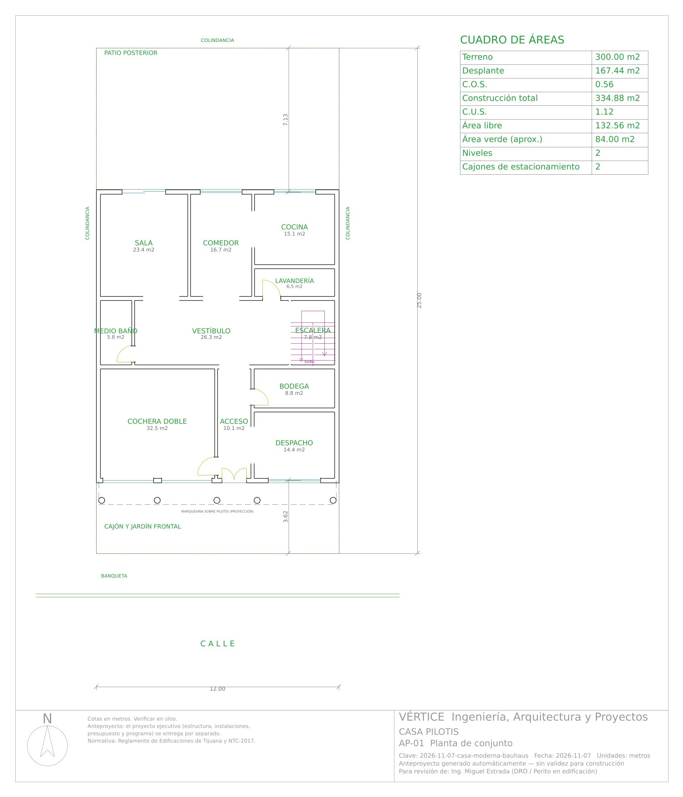
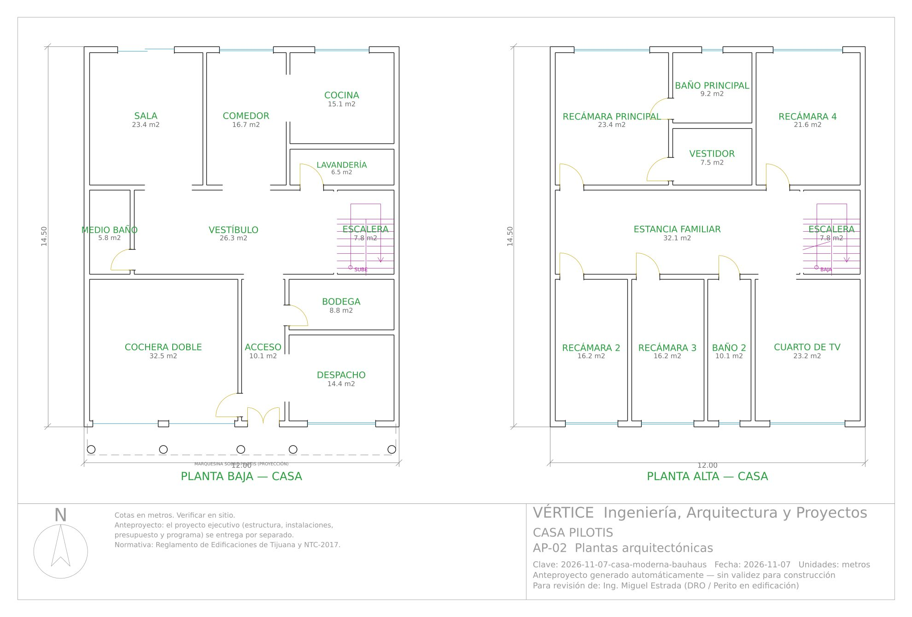
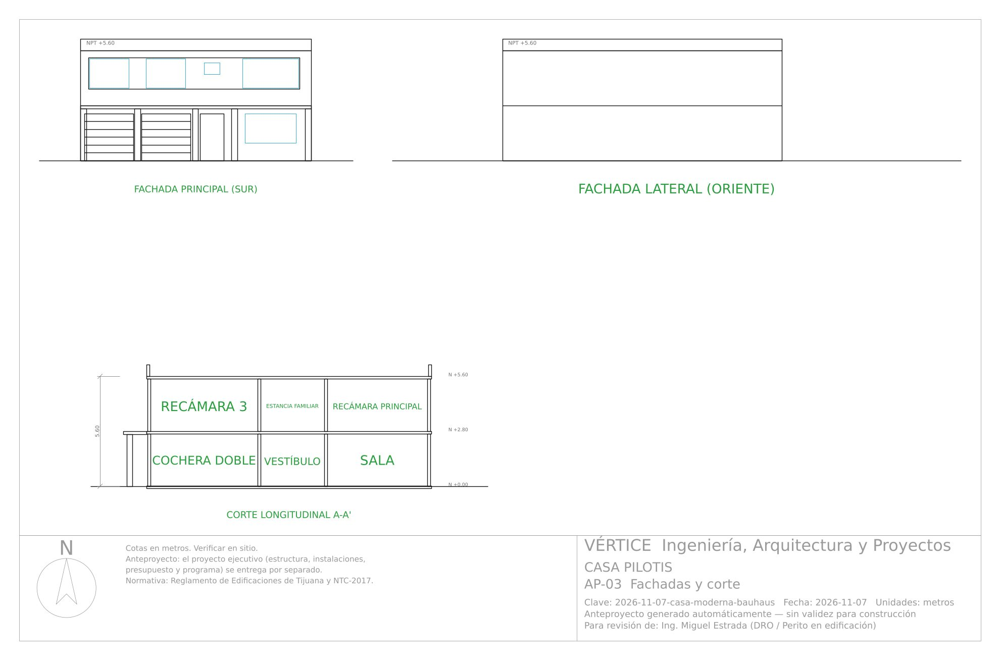

7 de noviembre de 2026 · Casa habitación
Casa Pilotis
Corriente: Moderna (Bauhaus / Movimiento Moderno)

Concepto
Vivienda de dos niveles en un lote de 12 x 25 m en Tijuana que reinterpreta el Movimiento Moderno: un prisma blanco y puro, de azotea plana, cuyo frente se despega del suelo con una marquesina de concreto sobre pilotis que corre a todo lo ancho, da sombra a la cochera y al acceso contra el sol del sur y deja ver la planta libre detrás. En planta alta, una banda corrida de ventanas y paneles de aluminio grafito une las cuatro habitaciones del frente en una sola línea horizontal, el gesto más reconocible de la Bauhaus, mientras que el canto rojo de la marquesina aporta el único color primario. Hacia el norte, la sala se abre al jardín posterior con un cancel corredizo de piso a techo que recibe luz difusa, y la brisa marina del poniente cruza la casa de fachada a fachada. Los laterales son muros ciegos de colindancia, de modo que toda la expresión se concentra en las dos fachadas cortas: forma que sigue a la función.
Dictamen del arquitecto
- Terreno de 12.00 x 25.00 m (300 m²); casa de 11.75 x 14.25 m a ejes entre colindancias oriente y poniente, 334.9 m² construidos en 2 niveles con desplante de 167.4 m²: COS 0.56 y CUS 1.12 (por verificar con el PDU de Tijuana). Frente libre de 3.12 m con cochera doble descubierta bajo la marquesina y jardín; patio posterior de 7.13 m.
- Lenguaje Movimiento Moderno: prisma blanco de azotea plana con pretil de 60 cm, marquesina de concreto de 15 cm y 1.20 m de vuelo a todo el frente sobre 5 pilotis Ø30 cm colocados en los macizos de la fachada (nunca frente a portones ni a la puerta), banda corrida de cancelería y paneles de aluminio grafito en planta alta y canto rojo óxido como único color primario. Render, AP-03, A-03, A-05, A-06, E-01 y la escena de Blender dibujan la misma geometría.
- Recorrido: puerta doble de 1.20 m bajo la marquesina → acceso (1.80 x 5.60 m) con paso a cochera, bodega y despacho → vestíbulo (7.75 x 3.40 m) con medio baño, lavandería y escalera en U → sala (4.46 x 5.25 m) y comedor (3.17 x 5.25 m) comunicado con la cocina (4.11 x 3.67 m). La sala sale al jardín por un cancel corredizo de 2.15 x 2.10 m (P-4). Escalera de 1.15 m de tramo, peralte 17.5 cm, huella 29.0 cm (2p+h = 64 cm).
- Planta alta: estancia familiar (3.40 x 9.45 m) que reparte a recámaras 2 y 3 (2.90 x 5.60 m), recámara 4 (4.11 x 5.25 m), cuarto de TV (4.15 x 5.60 m) y baño 2; recámara principal (4.46 x 5.25 m) con vestidor y baño sólo desde ella. Todas las recámaras ≥ 2.70 m de lado y con ventana al exterior; altura libre 2.67 m en ambos niveles (≥ 2.30 m). Medio baño sin ventana: extractor obligatorio.
- Correcciones de motor en revisión: ninguna casa tenía puerta al patio posterior (jardín y tanque de gas sin acceso) — ahora la zona social sale por cancel corredizo; los pilotis del render eran postes sueltos que no cargaban nada y ni AP-03 ni A-05 ni Blender dibujaban pilotis ni ventana corrida; la revisión de acceso principal tomaba el cancel del patio como acceso; y el análisis de cargas suponía losa de 12 cm aunque el diseño pidiera 13 cm. Para conservar el margen sísmico en X el cancel se dimensiona al 17.5 % de iluminación y la proporción de vano bajó de 0.60 a 0.50.
Dictamen de ingeniería
- Veredicto: construible conforme a norma — 0 errores y 0 avisos en 29 verificaciones de coordinación —, sujeto a los supuestos por validar indicados abajo; la marquesina sobre pilotis requiere su detalle estructural en la memoria definitiva.
- Mampostería confinada: block de 20 cm en dirección X y de 15 cm en Y, castillos K-1 15x20 (58 en PB y 54 en PA) y dalas; trabe de carga T-1 30x55 (5 #6) de 5.60 m sobre la cochera apoyada en columna C-1 entre portones; 13 cerramientos de 15x30, 15x35 y 20x30 cm (claro máximo 3.25 m). Dos muros de planta alta sin muro inferior se especifican como divisorios ligeros de tablaroca. Método simplificado NTC: X VR 83.8 t ≥ Vu 78.1 t (dirección crítica, margen 7 %); Y VR 109.9 t ≥ 78.1 t; V basal 71.0 t con c/Q'R = 0.213 supuesto y T = 0.18 s.
- Losas macizas de 13 cm en entrepiso y azotea (#3 @ 10–20 cm), con cargas recalculadas al peralte real; escalera de losa de 14 cm. Marquesina de concreto de 15 cm y 1.20 m de vuelo empotrada en la losa de entrepiso con trabe de borde sobre 5 pilotis Ø30 cm (4 #4, E #2.5 @ 15) y zapatas aisladas ZA-P de 80x80x20 cm (E-01): está en la hoja "Por cotizar" y debe detallarse su armado y su bajada pluvial.
- Zapatas corridas de 50 x 20 cm: ZC-1 perimetral (q = 5.91 t/m², excéntricas en los linderos oriente y poniente) y ZC-2 interior (q = 9.13 t/m²) contra una q adm supuesta de 12 t/m² a -0.80 m: requiere estudio de mecánica de suelos y confirmar el espectro sísmico del sitio. Cuantificación: 6,934 kg de acero y 79.8 m³ de concreto.
- Instalaciones: toma Ø13 mm, 22 UM (1.21 L/s), alimentación Ø25 mm, cisterna de 2 m³ con hidroneumático y calentador de paso; 25 UD, bajadas de baño 2 y baño principal junto a muro, colector Ø100 mm al 2 % a la red CESPT; gasto pluvial 4.7 L/s a 2 bajadas Ø100 mm; 18 circuitos (16.0 kW instalados, 11.2 kW de demanda, 56.5 A), interruptor general 2P-100 A, desbalance 1.1 %; gas LP con tanque estacionario de 500 L en azotea ventilada: prever escalera marina o toma de llenado a distancia. Factibilidades de CESPT y CFE por tramitar.
- Presupuesto de $1,898,629 + IVA ($5,670/m²) y programa de 23 semanas; cancelería, banda corrida de aluminio, marquesina y pilotis quedan en la hoja "Por cotizar" (39 partidas) hasta tener cotización de proveedores de Tijuana.
Materiales
Muros de block de concreto con aplanado fino blanco liso y pintura elastomérica; marquesina de concreto armado de 15 cm con canto pintado rojo óxido sobre pilotis circulares de concreto aparente de 30 cm; losas macizas de concreto con azotea plana impermeabilizada y pretil de 60 cm; cancelería de aluminio natural anodizado con vidrio claro de 6 mm; banda corrida de panel de aluminio compuesto color grafito entre ventanas; porcelanato 60x60 blanco mate rectificado; antiderrapante 60x60 en baños
Vistas

Anteproyecto — descargas
Láminas del anteproyecto






Proyecto ejecutivo
Proyecto ejecutivo completo — 17 láminas. Se entrega por separado; no se publica en esta galería.
Revisión de coordinación arquitectura–estructura–instalaciones–acabados y normativa: Sin errores · 0 avisos en 29 verificaciones.
Arquitectónico
- A-01 Planta de conjunto
- A-02 Plantas arquitectónicas amuebladas
- A-03 Plantas acotadas a ejes
- A-04 Planta de azotea
- A-05 Fachadas
- A-06 Cortes arquitectónicos
- A-07 Cancelería y acabados
Estructural
- E-01 Planta de cimentación
- E-02 Losas, trabes y castillos
- E-03 Detalles estructurales
- E-04 Cuantificación de acero y concreto
Instalaciones
- IH-01 Instalación hidráulica
- IS-01 Instalación sanitaria y pluvial
- IE-01 Instalación eléctrica
- IG-01 Instalación de gas LP
- IH-02 Isométrico hidráulico
- IE-02 Cuadro de cargas y diagrama unifilar
Incluye: Memoria técnica (Word/PDF) · Presupuesto (Excel) · Programa de obra (Excel y Gantt) · Juego de planos (PDF y DXF)
Revisión de calidad
Sin errores · 1 avisos
| Tipo | Nivel | Observación |
|---|---|---|
| Aviso | Casa · Planta baja | Medio baño: ventilación mecánica (extractor) obligatoria. |
Cuadro de áreas
Ver los 21 espacios
| Bloque | Nivel | Espacio | Medidas (m) | Área (m²) |
|---|---|---|---|---|
| Casa | Planta baja | Cochera doble | 5.80 x 5.60 | 32.48 |
| Casa | Planta baja | Acceso | 1.80 x 5.60 | 10.08 |
| Casa | Planta baja | Despacho | 4.15 x 3.47 | 14.41 |
| Casa | Planta baja | Bodega | 4.15 x 2.13 | 8.83 |
| Casa | Planta baja | Medio baño | 1.70 x 3.40 | 5.78 |
| Casa | Planta baja | Vestíbulo | 7.75 x 3.40 | 26.35 |
| Casa | Planta baja | Escalera | 2.30 x 3.40 | 7.82 |
| Casa | Planta baja | Sala | 4.46 x 5.25 | 23.44 |
| Casa | Planta baja | Comedor | 3.17 x 5.25 | 16.66 |
| Casa | Planta baja | Lavandería | 4.11 x 1.57 | 6.48 |
| Casa | Planta baja | Cocina | 4.11 x 3.67 | 15.11 |
| Casa | Planta alta | Recámara 2 | 2.90 x 5.60 | 16.24 |
| Casa | Planta alta | Recámara 3 | 2.90 x 5.60 | 16.24 |
| Casa | Planta alta | Baño 2 | 1.80 x 5.60 | 10.08 |
| Casa | Planta alta | Cuarto de TV | 4.15 x 5.60 | 23.24 |
| Casa | Planta alta | Estancia familiar | 9.45 x 3.40 | 32.13 |
| Casa | Planta alta | Escalera | 2.30 x 3.40 | 7.82 |
| Casa | Planta alta | Recámara principal | 4.46 x 5.25 | 23.44 |
| Casa | Planta alta | Vestidor | 3.17 x 2.36 | 7.50 |
| Casa | Planta alta | Baño principal | 3.17 x 2.89 | 9.16 |
| Casa | Planta alta | Recámara 4 | 4.11 x 5.25 | 21.59 |
Anteproyecto conceptual generado por el motor Vértice. El predimensionamiento estructural y los cálculos de instalaciones son preliminares y no sustituyen la memoria de cálculo definitiva, el estudio de mecánica de suelos ni la revisión y firma del DRO y corresponsables.